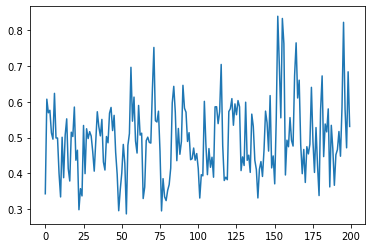
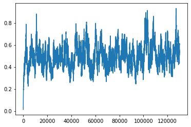
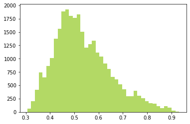
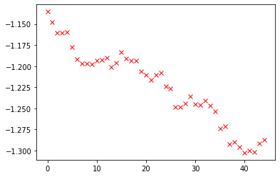

利用马可夫链计算一维谐振子的基态能量
计算作用量
$$ dS=\frac{(u_{n-1}+u_{n})^{2}}{2a\omega}+\frac{a\omega(u_{n-1}^{2}+u_{n}^{2})}{4} +\frac{(u_{n+1}+u_{n})^{2}}{2a\omega}+\frac{a\omega(u_{n+1}^{2}+u_{n}^{2})}{4} $$
在一系列旧点之上乱序选取，加上某个范围内的随机数，新点与旧点进行局部作用量比较，作用量如减小，则接受新点。如果作用量增大，则按照概率$e^{dS_{2}-dS{1}}$确定是否接受。不接受的点保留旧值。
1 | double weight(double x0, double x1, double x2, double aomega){ |
产生若干（很多）组态之后，对后面的组态求平方平均值即为基态能量。
1 | import numpy as np |
1 | libcd = npct.load_library("pf", ".") |
1 | libcd.hhh.argtypes=[array_1d_double,c_int,c_int,c_double,c_double] |
1 | lu=np.zeros([130000,500],dtype='float64') |
1 | libcd.hhh(lu,130000,500,0.1,0.2) |
161 | suu=np.zeros(130000) |
1 | for kk in range(0,130000): |
1 | plt.plot(suu[10000::600])#为防止关联性每600个取数据。 |
[<matplotlib.lines.Line2D at 0x7f8d80dda898>]
1 | plt.plot(suu) |
[<matplotlib.lines.Line2D at 0x7f8d405b7710>]
1 | plt.hist(suu[100000::],40,histtype='bar',facecolor='yellowgreen',alpha=0.75) #方均值分布 |
(array([ 59., 204., 421., 739., 653., 868., 1014., 1371., 1563.,
1890., 1927., 1802., 1762., 1831., 1505., 1209., 1271., 1342.,
1111., 1041., 907., 809., 658., 616., 520., 426., 294.,
300., 394., 306., 263., 203., 161., 154., 107., 70.,
109., 86., 27., 7.]),
array([0.30646848, 0.32209395, 0.33771941, 0.35334488, 0.36897034,
0.3845958 , 0.40022127, 0.41584673, 0.4314722 , 0.44709766,
0.46272313, 0.47834859, 0.49397406, 0.50959952, 0.52522499,
0.54085045, 0.55647592, 0.57210138, 0.58772684, 0.60335231,
0.61897777, 0.63460324, 0.6502287 , 0.66585417, 0.68147963,
0.6971051 , 0.71273056, 0.72835603, 0.74398149, 0.75960695,
0.77523242, 0.79085788, 0.80648335, 0.82210881, 0.83773428,
0.85335974, 0.86898521, 0.88461067, 0.90023614, 0.9158616 ,
0.93148707]),
<a list of 40 Patch objects>)
1 | np.mean(suu[10000::600]) |
0.495475057671359851 | hy=lu[10000::600] |
1 | loo=np.zeros(500) |
1 | plt.plot((looo[5:50]),'rx') |
[<matplotlib.lines.Line2D at 0x7f8d3f03e208>]
1 | looo=np.log(loo) |
1 | loo |
array([ 0.34280532, 0.13145158, 0.09545402, 0.05821956, 0.11446664,
-0.00101133, 0.01600951, 0.01831628, 0.03161569, 0.03762436,
0.04253305, 0.03503241, -0.01741445, 0.0206876 , 0.0559742 ,
0.00657246, 0.02660626, 0.04883725, 0.02803961, 0.04471572,
-0.03246027, 0.02030995, 0.04995083, 0.08313026, 0.03374789,
0.02868077, -0.04105371, -0.01369022, -0.02838291, -0.01871887,
0.02223757, 0.04172896, 0.01848376, 0.06792485, 0.00939457,
-0.0263474 , -0.00551463, 0.06894225, -0.01276136, -0.0205876 ])1 | np.var(suu[10000::600]) #f方差 |
0.010724637054091532相关C++ 模块代码
1 |
|
编译指令
1 |
|